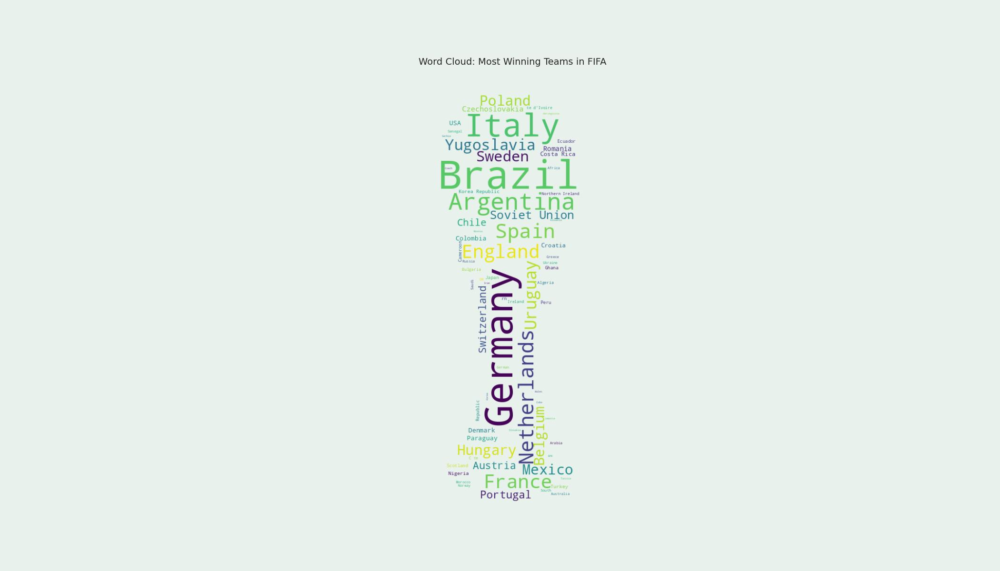

The FIFA Story
Most Winning Teams

Inference
The Word Cloud shows us very well and with ease about all the countries that have won the most matches. It is a type of visualisation to engage users visually by aethetics as well as with some bit of interaction.
Although, the main purpose is to give a rough estimate about which are the top leading countries and which are the tailing end countries with least wins in FIFA hitherto.